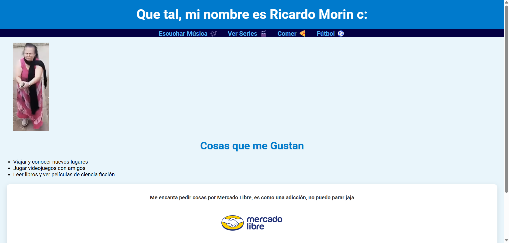
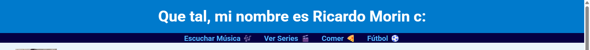

Crear una carpeta llamada Evidencia 2 y modificar la página pasatiempos. Los cambios consistirán en agregar todos los selectores. Selector tipo, clase, id, descendientes, hermanos adyascentes. Para cada selector se debe colocar una imagen del código CSS y una imagen del resultado.
Selectores de id
Texto blanco: El texto se ve en blanco, así que resalta bien.
Centrado: Todo el texto está en el medio, se ve más ordenado.
Espacio alrededor: Hay un poco de espacio dentro del encabezado, así que no se siente apretado.
Sombra: Le pone una sombra suave, como si estuviera flotando un poco.

body: Le da un fondo azul claro y usa la fuente 'Roboto'. También se asegura de que no haya márgenes ni relleno extra, así que todo se ve limpio.
a (enlaces): Los enlaces no tienen subrayado, son de un color azul y se ven más llamativos porque son en negrita y un poco más grandes. Cuando pasas el mouse sobre ellos, cambian a un color rojo y se agrandan un poco, lo que hace que se vean más interactivos.
aside: Este es un área que se centra, tiene un fondo blanco, un poco de espacio alrededor y una sombra suave. Se ve como una tarjeta que destaca en la página.
footer: El pie de página tiene un fondo azul oscuro, texto blanco y también está centrado. Tiene un poco de espacio alrededor y una sombra que le da un toque elegante.
header#main-header h1: Aquí se ajusta el título dentro del encabezado. No tiene márgenes, así que se ve limpio, y es bien grande (2.5 veces el tamaño normal), lo que lo hace destacar.
aside img: Las imágenes dentro del aside tienen un ancho de 200 píxeles y esquinas redondeadas, lo que las hace ver más suaves. Además, cuando pasas el mouse sobre ellas, se agrandan un poco, lo que les da un efecto chido.
aside h4: Los títulos dentro del aside son de un color gris oscuro y tienen un poco de espacio arriba y abajo, así que no se ven apretados.
footer p: Los párrafos en el pie de página tienen un margen pequeño y son de color blanco, lo que los hace legibles sobre el fondo oscuro.

h2.section-title + article.hobby: Aquí estamos diciendo: "Oye, CSS, quiero que a
cualquier artículo de pasatiempos que esté justo después de un título de sección, le pongas un borde en la parte superior".
border-top: 2px solid #007acc;: Este borde es de 2 píxeles de grosor, sólido y de color azul.
Agregar los restantes selectores. hermano general, pseudo-clases y pseudo-elementos.